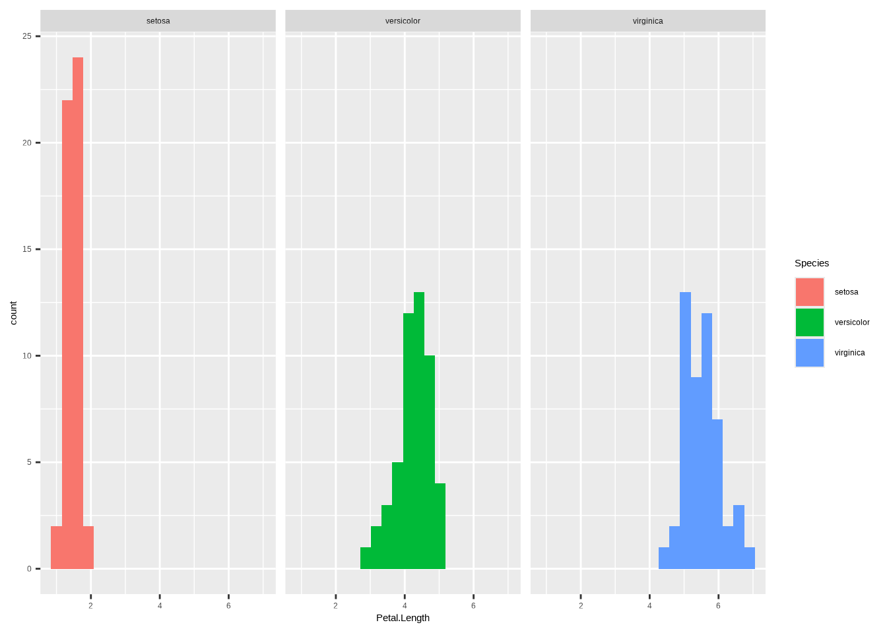
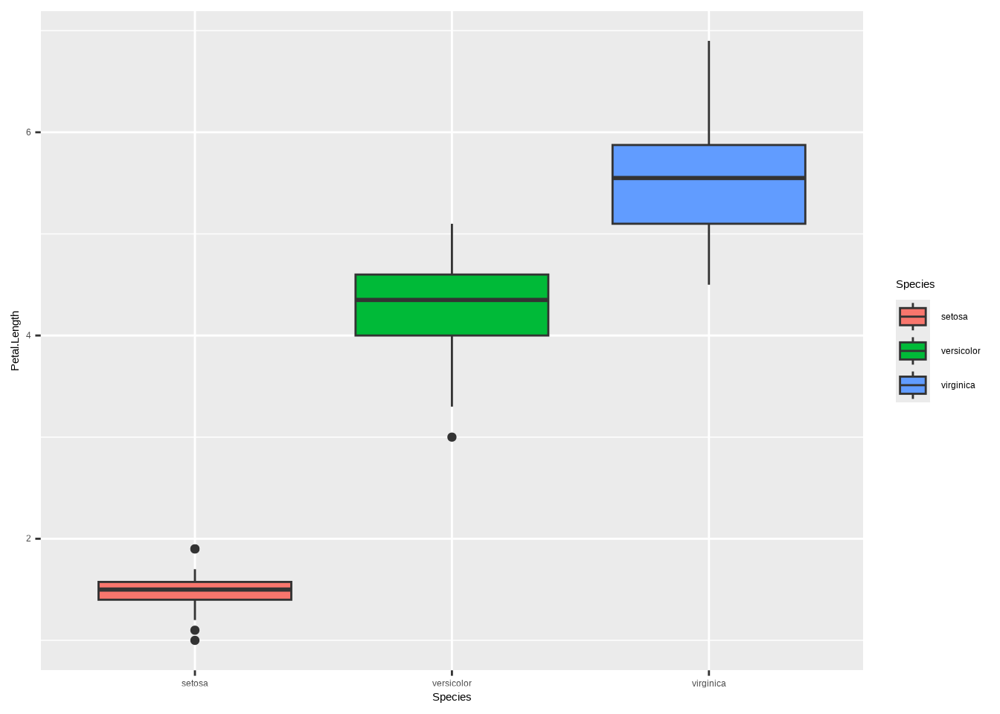

Note: R has 2 assignment operator: <- and =. For all relevant porpuses of the tutorial, we can safely use either of those operators interchably.
############################################### Assigning and manipulating variables ###############################################x =5print(x)
[1] 5
# just givng the variable name, will print it to the REPL by defaultx
[1] 5
# assign value from one variable to the nexty = x# object did not trigger a copy of "x", rather y "points" to xprint(y)
[1] 5
# change the value of xx =3print(x)
[1] 3
# at the moment we changed the value of "x", a copy of the old "x" was triggered and assigned to "y"print(y)
[1] 5
4.2 Working with data frames
One of the most important object types in R are data.frames. They are rectangular tables with rows and columns, whereas the column can have different types, which is the main differntiator to a matrix, where the column types are all identical.
############################################### Assigning and manipulating variables ###############################################dat =data.frame(name =c("Adam", "Paul", "Elly"),age =c(22, 43, 54) )# look at general structurestr(x)
num 3
# extracting single column and storing in a vector objectnames = dat$name# can also be accessed with the bracket operatorages = dat[, "age"]str(names)
chr [1:3] "Adam" "Paul" "Elly"
str(ages)
num [1:3] 22 43 54
# subsettingdat[dat$name =="Paul",]
dat[dat$age %in%c(22, 54),]
# adding a column to a data framedat$id =1:nrow(dat)dat[, "id_2"] = dat$id +2print(dat)
name age id id_2
1 Adam 22 1 3
2 Paul 43 2 4
3 Elly 54 3 5
name age id id_2
1 Adam 22 12 3
2 Paul 43 2 4
3 Elly 54 3 5
4.3 Reading and Writing Data from/to files
Most of the time, data is being innput to R from files. However, R has interfaces to most data storage systems out there, including all databases and cloud storages.
############################## Read and Write data ############################### create data framedat =data.frame(name =c("Adam", "Paul", "Elly"),age =c(22, 43, 54) )str(dat)
'data.frame': 3 obs. of 2 variables:
$ name: chr "Adam" "Paul" "Elly"
$ age : num 22 43 54
# write data to disk as csvwrite.table(dat, file ="my_data.csv", row.names =FALSE, sep =",")# read file back indat_read =read.table(file ="my_data.csv", sep =",", header =TRUE)str(dat_read)
'data.frame': 3 obs. of 2 variables:
$ name: chr "Adam" "Paul" "Elly"
$ age : int 22 43 54
4.4 Vectors and Matrices
In R, everything is a vector or a list or an array of vectors. A data.frame is a list of vectors of different types, a matrix is a list of vectors of a single type. A scalar is a vector of length 1.
############################## Vectos and Matrices ############################### integer vector of length onex =as.integer(1)str(x)
Getting a good overview and understanding of the data sets we work with is very important. Summary statistics and visualizations are important tools here. We will be using dlookr and ggplot2.
############################################# Data Exploration and Visualization #############################################if(!require(dlookr)) install.packages('dlookr')if(!require(ggplot2)) install.packages('ggplot2')library(dlookr, ggplot2)# load a public data setdata(iris)str(iris)
# histogram for temp by monthp2 =ggplot(iris, aes(x = Petal.Length)) +geom_histogram(aes(fill = Species), bins =20) +facet_wrap(~ Species)p2

# boxplotp3 =ggplot(iris, aes(x = Species, y = Petal.Length, fill = Species)) +geom_boxplot()p3

4.6 Writing Functions
All operators in R are functions, for instance + is just a special way of calling a function:
# get help for a function?sum# get help for the function '+'?`+`# check the function definition for `+`fix(`+`)
A function is an operation on input variables ($f(x)), the function can be anything interpretable by R. For example, this is how we can define a function that computes and returns the empirical mean (average) of a numeric vector:
my_mean_function =function(y) { n =length(y) sum =0for(i in1:n) sum = sum + y[i] mean = sum / nreturn(mean)}
We can now use that function inside R for estimating means on any input vector y for which the the operators + and / are defined.
# generate random vectorx =rnorm(1000, mean =23.42, sd =4)# calculate mean with our functionour_mean =my_mean_function(x)our_mean